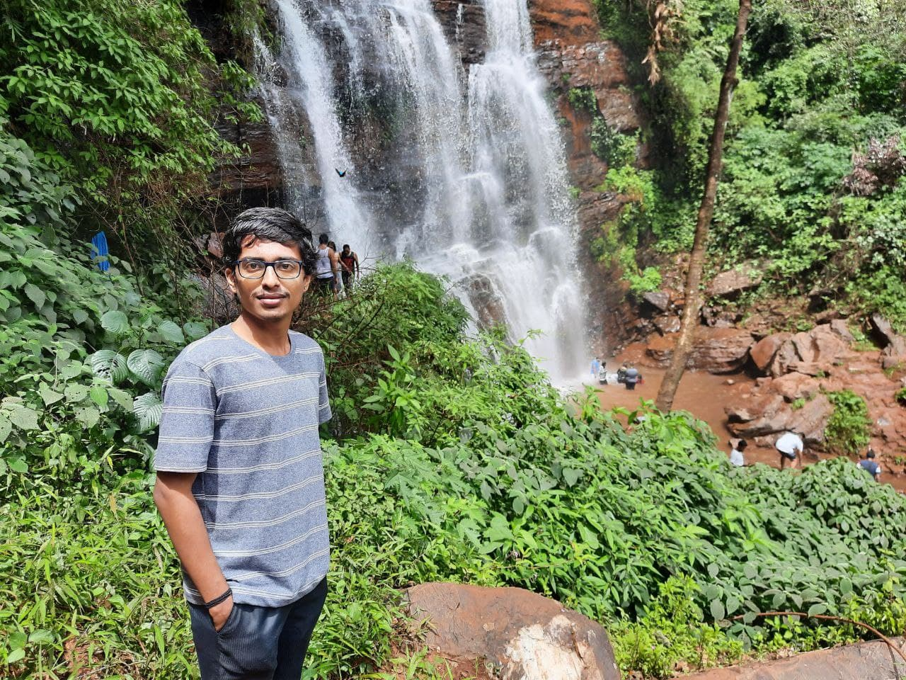
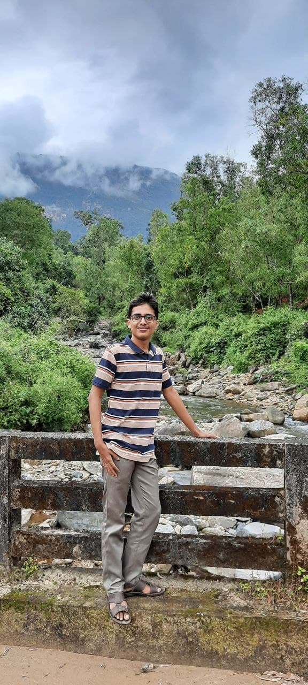

This falls is located in the middle of dense forests and coffee plantations.
Me and my friends enjoying in the falls
20th Sept 2021 - Mullayanagiri Hills, Chikkmagalore
I was blissed from this view. These hills are located in the Chandra Dhrone Hill Ranges of the Western Ghats.Mullayanagiri is the highest peak in Karnataka.
The height of this peak is 1925 meters and is also the highest peak in krishna river basin.
This temple was built my Hoysala Kings and was consecrated in 1117 CE. This temple reflects the rising opulence, political power, deep spiritual dedication to Sri Vaishnavism of Ramanujacharya.
We had an plan to go to waterfalls but we suddenly changed the plan and went to Temple. The picture taken outside the temple with my friends.Remarkable architecture, sculptures, reliefs, frizes, iconography, inscriptions and history.
19th Sept 2021 - Devaramane Hills, Charmady Ghats
Devaramane is a village in Mudigere Taluk, Chikkamagaluru
Enjoyed a lot with friends
11th Sept 2021 - Kadalkere Park, Mudbidri
The water was crystal clear in this park.
Love green green and greenIt was awsome to spend time in this greenary park
15th Aug 2021 - Chitrabhi Falls, Muniyal
Blissed out by just closing my eyes inbetween the falls.
Chitrabhi falls is the hidden falls in Muniyal near Kabbinale Falls
18th Oct 2020 - Karinjeshwara Hill Temple, Bantwal
The temple is situated on the peak of Karinja hill, about 1000 feet above sea level. There are about 355 steps to reach the temple.
View from the foot of the fill. Lake(water), Breeze(air), Sun(fire), Hill(soil), Space over the hill. Wowww!! Spectacular view.
4th Oct 2020 - Ermayi Falls, Ujjire
Ermai Falls, a secret multi-layered waterfall hidden in the foothills of the Ballalarayana Durga range of western ghats in Dakshina Kannada. It is a seasonal waterfall, which comes to full glory in the peak monsoon season. Thick foam-like water slides down the rocky terrain from 75ft and forms a pool at the bottom. The pool is about 5 ft deep and you can waive off the day by going for a swim or taking dip water.
4th Oct 2020 - Didupe Falls, Ujjire
Didupe falls is an untouched beauty that hides at the base of Charmadi ghat in western ghats of Dakshina Kannada Crystal clear water plunges from a 70 ft rocky cliff and splashes the ground with a great force. This falls which is 40 Kilometers from Ujire town is surrounded by rocky terrains and dense misty forests on most sides.
4th Oct 2020 - Charmady

Some where between the ghats of Charmady
30th Aug 2020 - Devaramane Hills, Charmady
We visited this place during the visit to Didupe Falls.
Woww!! Amazing hills
25th Aug 2020 - Durga Falls, Karkala
This falls is about 3 to 4 kilometers away from the main city of Karkala.
We regularly go this place during our free times.
2nd Aug 2020 - Sea Walk & Beach, Malpe
Malpe is natural port and a major fishing harbor on the Karnataka coast.
.jpg)
.jpg)
.jpg)

.jpg)
.jpg)
.jpg)
.jpg)

.jpg)
.jpg)
.jpg)
.jpg)